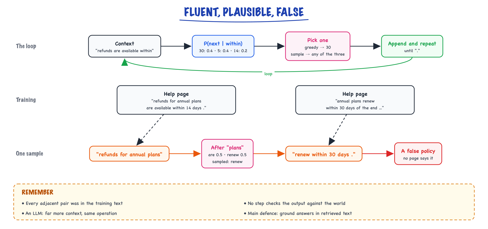

What an LLM is // LLM fundamentals
A next-token predictor, the language-modeling objective, model families and scaling laws.
01 — At a glance
What large language models are, how decoder-only transformers predict text token-by-token, why scaling laws and compute budgets matter, and how training differs from inference serving at production scale.

Whiteboard overview: pre-training on internet-scale text learns next-token prediction; alignment (SFT/RLHF) shapes behavior; inference serves autoregressive decoding behind an API gateway with token billing, KV cache, and sampling controls.
02 — New words
| Word | Meaning |
|---|---|
| Token | The unit a model reads and writes: a word, part of a word, a number or a punctuation mark. Text is split into tokens before the model sees it. |
| Vocabulary | The fixed list of all tokens a model knows, typically 30,000 to 250,000 entries. |
| Language model | A model that assigns a probability to the next token given the tokens before it. |
| Autoregressive generation | Producing text one token at a time, feeding each chosen token back in as input for the next step. |
| Context (window) | The tokens the model can see when predicting the next one. Its maximum length is the context window. |
| Parameters (weights) | The learned numbers inside the model. "7B" means about 7 billion of them. |
| Pretraining | The first, largest training stage: predicting the next token on trillions of tokens of general text. |
| Base model / instruct model | The raw pretrained model, which continues documents, versus a version further trained to follow instructions and hold a conversation. |
| Perplexity | \(e\) raised to the average next-token loss: roughly how many tokens the model is choosing between at each step. Lower is better. |
| Decoder-only / encoder-only | A transformer that predicts left to right and can generate (GPT, Llama, Mistral), versus one that reads the whole input at once to produce representations (BERT). |
| Scaling law | An empirical formula predicting a model's loss from its parameter count, training tokens and compute. |
| Compute-optimal | The split of a fixed training budget between model size and data that gives the lowest loss. |
| Autoregressive | Generating one token at a time, each conditioned on all prior tokens. |
| Training-serving skew | Preprocessing differs between training and serving. |
The lesson
03 — The question
"Large language model" is used loosely to mean a chatbot, a product, or a kind of intelligence. For an engineer it should mean something precise: a function that takes a sequence of tokens and returns a probability for every possible next token, learned from a very large amount of text by one objective, predicting the next token. Everything an LLM appears to do (answer questions, write code, summarise, call tools) is built by running that function in a loop.
Holding on to that definition explains most of an LLM's behaviour in production: why it can state false things fluently, why it knows nothing after its training cutoff, why it has no memory between calls, why the same prompt can give different answers, and why cost is counted in tokens. The questions interviewers ask:
- What exactly is an LLM, and what is it trained to do?
- Why does "just predicting the next token" produce something that looks capable of reasoning?
- What is the difference between a base model and a chat model, and between decoder-only and encoder models?
- What do scaling laws say, and why are small models now trained on far more data than "compute-optimal"?
The running example is a support assistant for a cloud company, "Acme Cloud", whose help pages say things like "refunds are available within 30 days of purchase". We will first build the smallest possible language model, a word-counting model trained on eight sentences of those help pages, and see the whole idea working, including its failure. Then we scale the same idea up to a 7-billion-parameter model and see what changes and what does not.
04 — Step 1: a function from context to a next-token distribution
Train a bigram model on eight short sentences from Acme's help pages (72 words, 35 distinct). A bigram model predicts the next word from only the previous word, by counting: of all the times word \(a\) appeared, what fraction were followed by word \(b\)?
After "within", the help pages continue with "30" twice, "5" twice and "14" once. So the model's prediction is:
\[ P(\text{30} \mid \text{within}) = 0.4,\quad P(\text{5} \mid \text{within}) = 0.4,\quad P(\text{14} \mid \text{within}) = 0.2 \]That is a language model: context in, probability distribution over the vocabulary out. An LLM has exactly this interface. The differences are scale, and what "context" means:
- The vocabulary is about 100,000 tokens, not 35 words, so the output is 100,000 probabilities (computed from 100,000 logits by softmax, as in The math you need).
- The context is not the last word but the entire preceding text, up to the context window: thousands to hundreds of thousands of tokens.
- The prediction is computed by a neural network with billions of parameters, not looked up in a table of counts.
Tokens are usually pieces of words; how text is split and what that costs is covered in Tokens, context & cost. In this lesson, "token" and "word" can be read as the same thing.
05 — Step 2: generation is a loop around that function
The model predicts one token. To produce text, run it in a loop: predict a distribution, pick one token from it, append that token to the context, predict again, and stop at an end marker or a length limit. This is autoregressive generation.
Starting from "refunds" and always picking the most likely next word (greedy decoding), our bigram model writes: "refunds are available within 30 days ." Correct and fluent. Sampling at random in proportion to the probabilities instead, three runs gave:
- "refunds are not available within 5 business days of the billing dashboard ."
- "refunds for annual plans are available 24 hours a day ."
- "refunds for annual plans renew within 30 days ."
Every adjacent pair of words in those sentences appeared in the training text. The sentences are fluent, and they are false or meaningless: no help page says any of them. The model only ever asked "what usually comes next?", and "available" is sometimes followed by "24" (in "support is available 24 hours a day"). This is the mechanism of hallucination in miniature. An LLM conditions on vastly more context, so its continuations are far more often right, but the operation is the same: produce a plausible continuation, with no separate step that checks it against the world. Grounding answers in retrieved text is the main defence (Limits & hallucination).

The bigram model runs the same loop as an LLM: predict, pick, append, repeat. Sampling can stitch two true help-page sentences into one no page ever says.
How you pick from the distribution (greedy, temperature, top-p) is a separate choice from the model itself, covered in Decoding.
The loop also sets the cost structure. A forward pass of a model with \(N\) parameters costs about \(2N\) floating-point operations per token: 14 billion for a 7B model. Reading the prompt (prefill) processes all its tokens in one parallel pass, which is fast per token; generating the answer (decode) needs one sequential pass per output token, which is why output tokens are slower and usually priced several times higher than input tokens.
06 — Step 3: the objective is next-token prediction, scored by cross-entropy
Training sets the model's parameters so that the real next token gets high probability, everywhere in the training text. The loss at each position is the cross-entropy, \(-\log P(\text{actual next token} \mid \text{context})\), averaged over every position of every document. A trillion-token training set is a trillion small prediction exercises, each giving a gradient.
Measure our bigram model on a held-out sentence, "refunds are processed within 30 days .". With a small correction so unseen pairs do not get probability zero (add-one smoothing), the seven next-word probabilities are between 0.07 and 0.11, the average loss is 2.41, and the perplexity is \(e^{2.41} = 11.1\): at each step the model is about as unsure as if choosing uniformly among 11 words. Guessing uniformly over the 36 possible next tokens (35 words plus an unknown marker) would give perplexity 36. Lower perplexity on held-out text is the purest measure of how good a language model is at its own task.
Why does this one objective produce general capability? Because predicting real text well requires whatever knowledge and skill produced the text. To give high probability to "14" after "refunds for annual plans are available within", a model must have stored Acme's annual-plan policy. To predict the next line of a proof, it helps to follow the proof. To predict the next move described in a chess game, it helps to model the board. The objective never mentions facts, grammar or reasoning, but each of them lowers the loss, so gradient descent builds whatever internal machinery approximates them, to the extent the model's size and data allow. That is the honest version of "it is just autocomplete": it is autocomplete under extreme pressure to be right, and being right on diverse text demands a great deal.
The same view explains the limits. The model learns what text tends to say, which is not always what is true. It learns from the text it saw, so anything after its training cutoff, or inside your company's private documents, is unknown to it unless you put it in the context.
07 — Step 4: why counting fails and a neural network does not
Why not make the counting model better by using longer contexts? Three problems appear immediately in our tiny corpus, and they are the reason LLMs are neural networks.
- Sparsity. After "processed within", the trigram model (two words of context) has only ever seen "5", so it gives "30" probability zero. Longer contexts are seen fewer times, and with 100,000 tokens there are \(10^{50}\) possible 10-token contexts: almost every real context has never appeared in any training set.
- No similarity. "Credits" never appears in the help pages, so the model knows nothing about "credits are available within", even though it is plainly similar to "refunds are available within". To a count table, every word is unrelated to every other.
- Size. Storing counts for long contexts is impossible.
A neural language model solves all three with one move: it turns the context into a vector (a list of a few thousand numbers) and computes the prediction from that vector. Similar contexts produce similar vectors, so what the model learned from "refunds are available within" transfers to "credits are available within" without ever seeing the second. Words become vectors too (embeddings), placed so that words used in similar ways sit near each other. The model never stores a table of contexts; it stores a few billion parameters that compute a good vector for any context, including ones never seen before. Generalising from seen contexts to unseen ones is the whole point.
08 — Step 5: what is inside, and where the parameters are
Almost every current generative LLM is a decoder-only transformer (a few use other designs, such as state-space or hybrid models, and frontier labs do not always publish their architectures). The input tokens are looked up in an embedding table to get one vector per token. Those vectors pass through a stack of identical blocks; each block lets every position gather information from earlier positions (attention) and then transforms each position independently (a feed-forward MLP). The final vector at the last position is multiplied by an output matrix to give one logit per vocabulary token. How attention works is the subject of Transformers; here we only need to know where the parameters live.
For a Llama-2-7B-style configuration (hidden size 4,096, 32 blocks, MLP width 11,008, vocabulary 32,000):
| Component | Calculation | Parameters |
|---|---|---|
| Attention, per block | 4 matrices of \(4096 \times 4096\) | 67.1M |
| MLP, per block | 3 matrices of \(4096 \times 11008\) | 135.3M |
| All 32 blocks | \(32 \times 202.4\)M | 6.48B |
| Input embeddings + output matrix | \(2 \times 32000 \times 4096\) | 0.26B |
| Total | 6.74B |
96% of the parameters are in the blocks, and two thirds of each block is the MLP. A rough rule follows: parameters \(\approx 12 \times \text{layers} \times \text{hidden}^2\) (the ratio is approximate because MLP widths vary). At 2 bytes per parameter in bf16, this model is 13.5 GB of weights, which sets the minimum GPU memory to serve it before any context is stored.
09 — Step 6: base model, instruct model, chat model
Pretraining produces a base model: an excellent continuer of documents. Give it "What is Acme's refund window?" and it may well continue with "What is Acme's cancellation policy? How do I export my data?", because on the web a question is often followed by more questions, as in an FAQ list. It is not being unhelpful; it is predicting.
An instruct or chat model is the same network, same architecture, further trained on examples of instructions followed by good responses (supervised fine-tuning), then on human or AI preferences between responses (RLHF or DPO). Conversations are written into a fixed text format with special tokens marking who is speaking, the chat template, so the model learns that after the assistant marker comes a helpful answer. Underneath, the chat model is still predicting the next token; the training has changed which continuations are likely. The stages, data and costs are in How LLMs are trained.
For an engineer the practical rule is: use instruct or chat models for applications; use base models only when you will fine-tune them yourself or need raw continuation (some completion and scoring tasks). And always send a chat model its own template, which API providers do for you and open-model libraries do through the tokenizer's chat template.
10 — Step 7: model families
| Family | How it reads text | Trained to | Examples | Use it for |
|---|---|---|---|---|
| Decoder-only | Left to right; each position sees only earlier ones | Predict the next token | GPT, Llama, Mistral, Qwen (and most frontier chat models, as far as published) | Generation, chat, tools, almost everything |
| Encoder-only | Whole input at once, both directions | Fill in masked-out tokens | BERT and its descendants | Embeddings, classification, rerankers |
| Encoder–decoder | Encoder reads input bidirectionally; decoder generates | Map input text to output text | T5, original transformer | Translation, some summarisation; less common now |
Decoder-only won for general-purpose models for three reasons. Every token in every document is a training target, so no data is wasted. Generation is built in, so one model does every task phrased as text. And the design is simple, which made it the easiest to scale. Encoder models remain the workhorses inside RAG systems: most embedding models and rerankers are encoder-style (Choosing an embedding model).
Two other distinctions you will be asked about. Dense versus mixture-of-experts (MoE): in an MoE model each token is routed to a few of many MLP "experts", so the total parameter count is large but the compute per token is that of a much smaller dense model (Mixture of experts). Open-weight versus API: open weights can be self-hosted, fine-tuned and inspected; API models are usually stronger at the frontier and need no infrastructure, but you send data to a provider and accept their versioning.
11 — Step 8: scaling laws
The most consequential empirical finding behind LLMs is that the next-token loss falls smoothly and predictably as you add parameters, data and compute: roughly a power law, a straight line on a log-log plot, over many orders of magnitude. That predictability is what justified spending tens of millions of dollars on a single training run: you can fit the curve on small models and extrapolate.
Training compute is approximately \(C \approx 6ND\) floating-point operations for \(N\) parameters and \(D\) training tokens (2 per parameter per token forward, 4 backward). A 7B model on 2 trillion tokens costs \(6 \times 7 \times 10^9 \times 2 \times 10^{12} = 8.4 \times 10^{22}\) FLOPs.
Given a fixed budget \(C\), how should it be split between model size and data? The Chinchilla study (Hoffmann et al., 2022) found that both should grow together, at roughly 20 training tokens per parameter. Earlier large models had been too big for their data. With \(C = 10^{23}\) FLOPs, setting \(D = 20N\) in \(C = 6ND\) gives \(N = \sqrt{C/120} \approx 29\) billion parameters and \(D \approx 580\) billion tokens.
But compute-optimal for training is not optimal for a product, because a model is trained once and then serves billions of tokens, and serving cost scales with \(N\). So recent models deliberately over-train small models: a 7B model on 2 to 15 trillion tokens is roughly 300 to 2,100 tokens per parameter. Using the loss formula fitted in the Chinchilla paper as an illustration (its absolute numbers are specific to that paper's data):
| Model | Tokens | Tokens per parameter | Predicted loss | Serving cost per token |
|---|---|---|---|---|
| 7B | 140B | 20 | 2.18 | 1× |
| 7B | 2T | 286 | 2.02 | 1× |
| 7B | 15T | 2,143 | 1.96 | 1× |
| 70B | 1.4T | 20 | 1.94 | 10× |
The 7B model trained on 15T tokens gets most of the way to the compute-optimal 70B model's loss at a tenth of the serving cost per token. That trade is why small, heavily trained open models are so capable, and why "how many parameters" alone says little about quality. Two cautions: loss is not the same as capability on a given task (on some task metrics, abilities appear fairly abruptly as loss falls smoothly), and data is now a binding constraint, since high-quality text is finite.
12 — Step 9: what the definition means for the systems you build
Translate "a next-token function, run in a loop" into engineering facts:
- It is stateless. Each API call is independent. "Memory" in a chat app is the application re-sending the conversation every turn; the cost of turn 20 includes turns 1 to 19 (Memory & context).
- Its knowledge is frozen and incomplete. It knows what was in its training data up to a cutoff. Acme's current refund policy, changed last week, must be supplied in the context: that is retrieval-augmented generation (The RAG pipeline).
- Outputs are samples. The same input can give different outputs, and a fluent output is not a verified one. Design for checking: structured output, validation, citations, evals.
- Everything is tokens. Latency is roughly prefill time plus output tokens times time per token; price is input tokens times one rate plus output tokens times a higher one.
- Instructions are just more context. The model has no hard separation between your instructions and text it reads, which is the root of prompt injection (Security).
13 — In code: a language model in thirty lines
import math import random from collections import Counter, defaultdict help_pages = """refunds are available within 30 days of purchase . refunds are processed within 5 business days . refunds are not available after 30 days . invoices are available in the billing dashboard . support is available 24 hours a day . annual plans renew within 30 days of the end of the term . password resets are processed within 5 minutes . refunds for annual plans are available within 14 days .""".split("\n") counts = defaultdict(Counter) # counts[prev][next] for line in help_pages: words = ["<s>"] + line.split() for prev, nxt in zip(words, words[1:]): counts[prev][nxt] += 1 vocab = {w for c in counts.values() for w in c} def next_token_distribution(prev): # the "model": context -> probabilities total = sum(counts[prev].values()) return {w: n / total for w, n in counts[prev].most_common()} print("P(next | within):", next_token_distribution("within")) def generate(word, greedy, rng): # the loop around the model out = [word] while word != "." and len(out) < 15: dist = next_token_distribution(word) word = max(dist, key=dist.get) if greedy else rng.choices(list(dist), weights=list(dist.values()))[0] out.append(word) return " ".join(out) rng = random.Random(1) print("greedy :", generate("refunds", True, rng)) for _ in range(3): print("sampled:", generate("refunds", False, rng)) V = len(vocab) + 1 # +1 for unseen words test = ["<s>"] + "refunds are processed within 30 days .".split() nll = [-math.log((counts[a][b] + 1) / (sum(counts[a].values()) + V)) for a, b in zip(test, test[1:])] print(f"held-out loss {sum(nll) / len(nll):.2f}, perplexity {math.exp(sum(nll) / len(nll)):.1f}")
It prints the 0.4 / 0.4 / 0.2 distribution after "within", the greedy sentence, the three sampled sentences above, and a held-out perplexity of 11.1. The same interface on a real (small) LLM, using Hugging Face Transformers:
# Written against the documented Hugging Face Transformers API; downloads GPT-2 weights (needs network). import torch from transformers import AutoModelForCausalLM, AutoTokenizer tok = AutoTokenizer.from_pretrained("gpt2") model = AutoModelForCausalLM.from_pretrained("gpt2").eval() ids = tok("Refunds are available within", return_tensors="pt").input_ids # (1, n_tokens) with torch.no_grad(): logits = model(ids).logits[0, -1] # one logit per vocabulary token (50,257) probs = torch.softmax(logits, dim=-1) top = torch.topk(probs, 5) for p, i in zip(top.values, top.indices): print(f"{tok.decode(int(i))!r:12} {p.item():.3f}") # the next-token distribution
Quick reference
14 — What & Why
What is an LLM?
A large language model is a neural network (almost always a decoder-only transformer) trained to assign probabilities to the next token given all prior tokens. At inference time it autoregressively samples one token at a time, appends it to context, and repeats until a stop condition.
Modern chat products (ChatGPT, Claude, Gemini) wrap the raw model with system prompts, tool calling, and RAG — but the core engine is still next-token prediction over a fixed vocabulary.
Functional requirements (as a building block)
- Accept a prompt (messages or raw text) and generate coherent continuation
- Support streaming token output for UX latency
- Configurable creativity via
temperature/top_p - Optional structured outputs (JSON mode, function schemas)
- Respect a context window cap (e.g. 128K tokens)
Non-functional requirements
- Latency: time-to-first-token (TTFT) + tokens/sec; users feel TTFT > 500ms
- Cost: billed per input + output token; dominated by long contexts and big models
- Throughput: batching + continuous batching on GPU clusters
- Reliability: rate limits, retries, fallbacks across model tiers
- Safety: alignment reduces harmful outputs; not a substitute for app-level guardrails
Interview anchor: An LLM is not a database and not a search engine — it is a conditional distribution over token sequences. Everything else (RAG, agents, tools) is orchestration around that primitive.
15 — Core Concepts
| Term | Definition | Gotcha |
|---|---|---|
| Token | Subword unit from BPE/byte-level tokenizer; ~4 chars/token English avg | Same text → different token counts across models; always count with tiktoken |
| Context window | Max tokens in prompt + completion; attention is O(n²) naive | Long prompts cost linearly in $ and quadratically in compute without sparse attention |
| Parameters | Weights learned in training (7B, 70B, 405B) | More params ≠ always better $/quality; inference memory scales with size |
| Pre-training | Self-supervised next-token loss on massive corpora | Model knows language patterns, not your private data unless fine-tuned or RAG |
| SFT | Supervised fine-tuning on instruction/response pairs | Teaches format and helpfulness; can overfit narrow demo styles |
| RLHF / DPO | Preference optimization from human or AI rankings | Improves safety/refusal; may reduce raw capability on some tasks |
| Decoder-only | Causal mask: token i only attends to j ≤ i | GPT-style; encoder-decoder still used for translation T5-style |
| KV cache | Stores key/value projections per layer for prior tokens | Without it, each new token recomputes full attention — catastrophic at long context |
| Perplexity | exp(avg NLL); lower = better language modeling | Does not correlate perfectly with chat usefulness post-RLHF |
| Hallucination | Fluent but factually wrong output | Fundamental to generative LM; mitigate with RAG + citations + abstention |
| Embedding | Dense vector from encoder head for similarity search | Chat model hidden states ≠ dedicated embedding models for retrieval |
| Quantization | INT8/INT4 weights for faster/cheaper inference | Small quality drop; AWQ/GPTQ need calibration data |
16 — API Surface (OpenAI Chat Completions)
The de-facto contract for production apps. Anthropic Messages API is analogous (system + messages + tools).
POST https://api.openai.com/v1/chat/completions
Authorization: Bearer $OPENAI_API_KEY
Content-Type: application/json
{
"model": "gpt-4o",
"messages": [
{"role": "system", "content": "You are a concise assistant."},
{"role": "user", "content": "Explain KV cache in 3 bullets."}
],
"temperature": 0.3,
"max_tokens": 256,
"stream": true
}
Response (non-streaming)
{
"id": "chatcmpl-...",
"choices": [{
"message": {"role": "assistant", "content": "..."},
"finish_reason": "stop"
}],
"usage": {
"prompt_tokens": 42,
"completion_tokens": 118,
"total_tokens": 160
}
}
Python client
from openai import OpenAI
client = OpenAI()
stream = client.chat.completions.create(
model="gpt-4o-mini",
messages=[{"role": "user", "content": "Hello"}],
stream=True,
)
for chunk in stream:
delta = chunk.choices[0].delta.content
if delta:
print(delta, end="", flush=True)
Key fields interviewers ask about
| Field | Purpose |
|---|---|
messages[] | Chat roles: system sets behavior; user/assistant alternate history |
temperature | Scales logits before softmax; 0 = greedy, 1+ = creative |
top_p | Nucleus sampling: sample from smallest set with cumulative prob ≥ p |
max_tokens | Cap completion length (output side of context budget) |
stream | SSE chunks; improves perceived latency |
tools / tool_choice | JSON schema for function calling; model emits tool_calls |
response_format | {"type":"json_object"} for structured output |
17 — When to Use / When NOT
| Scenario | Use LLM API? | Alternative |
|---|---|---|
| Open-ended language (summarize, draft, classify with nuance) | Yes | Smaller model + prompt if latency/$ tight |
| Exact deterministic rules (tax brackets, eligibility) | No | Code + rules engine; LLM for explanation only |
| Private / fresh facts | LLM + RAG | Fine-tune if style fixed; long context if doc fits once |
| Sub-10ms latency, millions QPS | No | Traditional ML ranker / heuristics |
| Structured extraction at scale | Maybe | Fine-tuned smaller model or regex + NER |
| Math/code with guarantees | Careful | Tool use (calculator, sandboxed interpreter) |
| Multimodal (image in) | Vision model | Separate pipeline vs text-only GPT |
Rule of thumb: Use APIs when language flexibility beats engineering cost. Use classical systems when correctness, latency, or cost must be provable.
18 — Architecture
TRAINING (offline, weeks, $M–$B)
Raw text corpus ──► Tokenizer ──► Decoder Transformer
│ │
│ Next-token CE loss
│ ▼
│ Base model checkpoint
│ │
├── SFT (instruction data)
└── RLHF/DPO (preferences)
│
▼
Aligned model weights (.safetensors)
INFERENCE (online, ms–s, $/1M tokens)
Client ──► API Gateway ──► Router (model tier, region)
│ │
│ GPU pool (vLLM / TGI)
│ │
│ ┌──────────┴──────────┐
│ Prefill (prompt) Decode (1 tok/step)
│ + KV cache grow + continuous batching
▼
Stream SSE / JSON + usage{prompt,completion}_tokens
19 — Deep Dive: Decoder-Only Transformers
GPT, Llama, Mistral, Claude (internally) are decoder-only: stacked transformer blocks with causal self-attention so position t cannot peek at t+1.
One block (simplified)
x ──► LayerNorm ──► Multi-Head Self-Attention (causal mask) ──► + residual ──► LayerNorm ──► FFN (up-project → GELU → down-project) ──► + residual
- Self-attention: each token queries all prior keys/values; complexity O(n²) in sequence length n
- Multi-head: parallel attention subspaces; typical 32–128 heads at scale
- Positional encoding: RoPE (rotary) common in Llama/Mistral; extrapolates better than absolute sinusoidal
- FFN: ~2/3 of parameters; SwiGLU variants in modern stacks
vs encoder-decoder (T5, BART): encoder sees full source; decoder cross-attends. Better for seq2seq translation; chat LLMs standardized on decoder-only + prompt formatting.
20 — Deep Dive: Scaling Laws
Kaplan et al. and Chinchilla (Hoffmann et al.) showed loss improves as power laws in model size N, dataset size D, and compute C.
- Kaplan (GPT-3 era): train biggest model you can afford on fixed compute
- Chinchilla-optimal: for compute budget C, balance N and D — often smaller model + more tokens than early GPT-3 runs
- Rule of thumb: ~20 tokens per parameter for Chinchilla-optimal pre-training (order-of-magnitude)
Implication for product teams: frontier quality jumps require 10× compute steps — most apps should ride APIs (GPT-4o, Claude 3.5) not train 70B from scratch.

Chinchilla insight: given fixed FLOPs, under-training a giant model wastes compute; optimal N×D pairing minimizes loss per dollar.
21 — Deep Dive: Inference vs Training
| Dimension | Training | Inference |
|---|---|---|
| Goal | Update weights via backprop | Fixed weights; forward only |
| Parallelism | Data + tensor + pipeline parallel across thousands of GPUs | Request batching; tensor parallel within node |
| Memory | Optimizer states (Adam: 2× params), activations, gradients | Weights + KV cache per request |
| Compute pattern | Large matmuls, all tokens in parallel (within batch) | Prefill (parallel) + decode (serial per sequence) |
| Cost model | Cluster-hours, checkpoint storage | $/1M tokens, GPU-second per request |
| Optimization | Mixed precision (bf16), ZeRO, flash attention | Continuous batching, speculative decoding, quantization |
Latency breakdown: TTFT dominated by prefill (prompt length). Tokens/sec dominated by decode (memory bandwidth + batch size).

Inference hot path: after prefill, each decode step reads growing KV cache, samples one token, appends until EOS or limit.
22 — Deep Dive: Model Families (GPT / Claude / Llama)
| Family | Access | Strengths | Interview note |
|---|---|---|---|
| GPT-4o / o-series (OpenAI) | API; no open weights | Strong generalist, tools, vision, JSON mode | o1/o3: more test-time compute (reasoning tokens) |
| Claude 3.5+ (Anthropic) | API; Messages + tools | Long context (200K), careful refusals, document Q&A | Constitutional AI lineage; cite PDFs in prod |
| Llama 3.x (Meta) | Open weights; self-host | Cost control, on-prem, fine-tune with LoRA | License constraints for >700M MAU products |
| Mistral / Mixtral | Open + API | Efficient MoE (Mixtral); EU hosting options | MoE: active subset of experts per token |
| Gemini (Google) | API + Vertex | Multimodal native, Google Cloud integration | Grounding with Search in GCP products |
Routing pattern in production
# Pseudo: cheap model filters, expensive model answers
def route(user_msg: str) -> str:
if is_simple(user_msg):
return "gpt-4o-mini" # ~$0.15 / $0.60 per 1M in/out
if needs_reasoning(user_msg):
return "gpt-4o" # or claude-sonnet-3-5
return "gpt-4o-mini"
23 — Deep Dive: Temperature & Top-p
Model outputs logits vector z over vocabulary. Sampling picks the next token.
Temperature
# logits' = logits / temperature # temperature → 0 : argmax (deterministic) # temperature → 1 : nominal training distribution # temperature > 1 : flatter, more random
Top-p (nucleus)
Sort tokens by probability; take smallest set whose cumulative mass ≥ p (e.g. 0.9); renormalize and sample. Adapts to sharp vs flat distributions.
| Use case | temperature | top_p |
|---|---|---|
| Code generation, JSON extraction | 0 – 0.2 | 1.0 or 0.95 |
| Customer support (consistent tone) | 0.3 – 0.5 | 0.9 |
| Brainstorming / marketing copy | 0.8 – 1.2 | 0.95 |
Setting both temperature and top_p low is usually redundant. Interview answer: use low temperature for determinism; top_p when you want adaptive vocabulary cutoff.
import math
import random
def sample_token(logits: list[float], temperature: float = 0.7) -> int:
scaled = [x / max(temperature, 1e-8) for x in logits]
m = max(scaled)
exps = [math.exp(x - m) for x in scaled]
total = sum(exps)
probs = [e / total for e in exps]
r = random.random()
cum = 0.0
for i, p in enumerate(probs):
cum += p
if r <= cum:
return i
return len(probs) - 1
More detail
24 — What an LLM really is
Let's open the box — gently. No math required, but by the end you'll know what's actually happening when you "talk to AI."
25 — Tokens: the model's alphabet
Models don't read letters or words — they read tokens, which are word-fragments. "cat" might be one token; "unbelievable" might be un + believ + able. A rough rule: 1 token ≈ 4 characters ≈ ¾ of a word. English text is ~1.3 tokens per word.
Tokens come from a fixed vocabulary (typically 32,000–200,000 entries) built once, before training, by an algorithm called BPE (byte-pair encoding). BPE starts from raw bytes and repeatedly merges the most frequent adjacent pairs it sees in a huge text sample. The result: common words become single tokens, rare words get split into pieces, and anything — emoji, Korean, base64 — can be represented, worst case as raw bytes. There is no "unknown word" in a modern LLM; there are only longer token sequences.
Don't guess how text splits — look. The tiktoken library ships OpenAI's tokenizers and is the standard tool for quick counting (Anthropic's exact tokenizer differs slightly, but counts land within a few percent for English — close enough for estimation):
import tiktoken enc = tiktoken.get_encoding("o200k_base") # tokenizer used by recent OpenAI models def show(text): ids = enc.encode(text) pieces = [enc.decode([i]) for i in ids] print(f"{len(ids):3d} tokens | {text!r}") print(" ", pieces) show("cat") # 1 tokens | 'cat' # ['cat'] show("unbelievable") # 3 tokens | 'unbelievable' # ['un', 'believ', 'able'] show("The capital of France is Paris.") # 7 tokens | 'The capital of France is Paris.' # ['The', ' capital', ' of', ' France', ' is', ' Paris', '.'] show("Strawberry has three r's") # 7 tokens | "Strawberry has three r's" # ['Str', 'awberry', ' has', ' three', ' r', "'s"] # note: 'Strawberry' is split! show("def fibonacci(n):") # 5 tokens | 'def fibonacci(n):' # ['def', ' fib', 'onacci', '(n', '):'] show("こんにちは") # Japanese: fewer characters, but often MORE tokens per word # 2 tokens show("3.14159265358979") # digits split unpredictably — one reason LLMs are bad at arithmetic # 6 tokens
Three practical observations fall out of runs like this (exact splits vary by tokenizer version — run it yourself):
- Whitespace belongs to the token.
' capital'with a leading space is a different token from'capital'. This is why a trailing space in your prompt can subtly change behavior. - The model never sees letters. "Strawberry" arriving as
['Str','awberry']is why "how many r's in strawberry?" is famously hard — the model literally cannot see the characters it's being asked to count. - Non-English and numbers are token-expensive. The same sentence in Hindi or Thai can cost 2–4× the tokens of English. Long numbers shatter into arbitrary chunks.
Why you care about tokens
You're billed per token (in + out), and the context window is measured in tokens. So "tokens" is the currency and the speed limit of everything you'll build. Quick worked example (illustrative prices): at $3 per million input tokens, a 50-page document ≈ 25,000 tokens ≈ $0.075 per call just to read it in. Send it on every turn of a 20-turn conversation and you've spent $1.50 on that one document — before the model has written a word.26 — The core trick: predict the next token
Given a sequence of tokens, the model outputs a probability for every possible next token. It picks one, appends it, and repeats. This is called autoregressive generation — generating one token at a time, each one conditioned on everything before it.
"The capital of France is" → model → P(next): Paris 91% · the 3% · located 2% · …
pick "Paris" → append → predict again →
Let's slow that down and walk one concrete step. You send the tokens ["The", " capital", " of", " France", " is"]. The model does one forward pass and emits a score for every one of its ~200,000 vocabulary entries. After softmax, the top of that distribution might look like (illustrative numbers):
| Candidate next token | Probability | Why it's plausible |
|---|---|---|
' Paris' | 0.91 | Overwhelmingly the most common continuation in training text. |
' the' | 0.03 | "…is the city of Paris" — a valid longer phrasing. |
' located' | 0.02 | "…is located in the north" — also seen in training data. |
' a' | 0.01 | "…is a city that…" — grammatical, less common. |
| ~199,996 others | 0.03 total | A long tail of near-zero options. |
Say it picks ' Paris'. The sequence is now "The capital of France is Paris", and the whole process repeats: next distribution probably puts most mass on '.' and ','. Generation stops when the model emits a special end-of-sequence token or hits your max_tokens cap. That's it. Every essay, every code file, every "reasoned argument" you've seen an LLM produce was built this way: one token, then another, each a draw from a probability distribution over the vocabulary.
How the pick happens: temperature on a real distribution
The model gives you probabilities; you decide how to sample from them (Decoding & sampling coming next — this is the preview). Temperature rescales the distribution before sampling. Concretely, with our distribution above:
| Token | T = 0 (greedy) | T = 0.7 | T = 1.0 | T = 1.5 |
|---|---|---|---|---|
' Paris' | always picked | 0.97 | 0.91 | 0.78 |
' the' | 0 | 0.013 | 0.03 | 0.08 |
' located' | 0 | 0.007 | 0.02 | 0.06 |
| tail (everything else) | 0 | ~0.01 | ~0.04 | ~0.08 |
(Illustrative: temperature divides the logits before softmax, so T<1 sharpens the distribution toward the favorite and T>1 flattens it toward uniform.) Notice what this means: at T=1.5, roughly 1 call in 5 does not say "Paris" first. For a fact-extraction pipeline that's a disaster; for a brainstorming tool it's the feature. You can feel this yourself with a tiny simulation:
import math, random # Illustrative logits (pre-softmax scores) for the top candidates after # "The capital of France is" logits = {" Paris": 8.0, " the": 4.6, " located": 4.2, " a": 3.5, " known": 3.1} def softmax_with_temperature(logits, T): if T == 0: # greedy: probability 1 on the argmax best = max(logits, key=logits.get) return {tok: (1.0 if tok == best else 0.0) for tok in logits} exps = {tok: math.exp(v / T) for tok, v in logits.items()} Z = sum(exps.values()) return {tok: e / Z for tok, e in exps.items()} for T in (0, 0.7, 1.0, 1.5): probs = softmax_with_temperature(logits, T) line = " ".join(f"{tok!r}:{p:.3f}" for tok, p in probs.items()) print(f"T={T:<4} {line}") # Now sample 1000 completions at T=1.0 and count outcomes random.seed(0) probs = softmax_with_temperature(logits, 1.0) tokens, weights = zip(*probs.items()) draws = random.choices(tokens, weights=weights, k=1000) print({t: draws.count(t) for t in tokens}) # → {' Paris': 941, ' the': 32, ' located': 21, ' a': 4, ' known': 2} (illustrative)
27 — What's inside: the Transformer (in plain terms)
The model is a giant neural network — the Transformer architecture. Its key invention is attention: when processing each token, the model can "look back at" and weigh every other token in the context to decide what's relevant. Reading the word "it" in a sentence, attention is how the model figures out which earlier noun "it" refers to. Stack dozens of attention layers over billions of learned numbers (parameters, the "weights") and you get an LLM.
A useful mental picture of one generation step:
tokens ──► embeddings ──► [ attention + feed-forward ] ×N layers ──► logits (one per vocab entry)
"The capital of France is" each token looks at all [' Paris': 8.0, ' the': 4.6, …]
earlier tokens and mixes │ softmax
in what's relevant ▼
probabilities → sample → ' Paris'
Scale is what turns this simple loop into something that writes working code. A "small" open model might have 8 billion parameters across 32 layers; frontier models are far larger. Every single token generated requires pushing the whole context through all of those layers — which is why output tokens dominate latency: a 500-token answer is 500 sequential forward passes. Reading input is comparatively cheap because all input tokens can be processed in parallel in one pass (this asymmetry is also why providers price output tokens higher).
Going deeper (optional)
Tokens are first turned into vectors (embeddings — Knowledge & RAG), positional info is added, then they pass through repeated self-attention + feed-forward blocks. The final layer produces a score (logit) for every token in the vocabulary; a softmax turns those into probabilities. "Reasoning" is an emergent statistical behavior of predicting well, not a separate module. During generation the model caches the attention keys/values of already-processed tokens (the KV cache) so each new token only computes attention against stored state instead of reprocessing the whole prompt — that's the machinery behind prompt caching discounts you'll meet later. If you want to truly internalize this, build a tiny GPT once (Karpathy's "Zero to Hero").28 — Why it feels intelligent
To predict the next token well across the entire internet, the model is forced to learn grammar, facts, reasoning patterns, code, and style. Think about what "predict the next token" requires at the limit: to continue "The verdict, given the evidence presented in section 3, must be" you need to have understood section 3. To continue a half-written Python function you need to know Python, the libraries it imports, and the author's intent. Compression of the world's text into weights forces the model to build internal machinery that behaves like knowledge and reasoning. Intelligence is a side effect of being an excellent predictor.
But — crucially — it predicts what is plausible, not what is true. Ask about a paper that doesn't exist and the model will happily generate a plausible-sounding title, authors, and abstract, because that's what text about papers looks like. That gap is the source of hallucination (Limits & hallucination).
Mini-scenario: the invoice extractor that "couldn't count"
You're building an invoice-processing tool. It works beautifully in demos, then a customer reports that totals are wrong on maybe 1 invoice in 20. You dig in: the model is re-typing the line-item amounts (fine — they're in the context) but summing them itself (bad — "$1,247.50" tokenizes as something like ['$','1',',','247','.','50'], and arithmetic over token fragments is pattern-matching, not math). One invoice sums to $12,940; the model outputs $12,840 — plausible, fluent, wrong, and formatted perfectly so nothing downstream flags it. The fix is architectural, not prompt-level: have the model extract the line items into JSON (a language task — its strength), then compute the sum in Python (a math task — your strength). This division of labor — model for language, code for computation — recurs through the whole book.
Gotchas the token view predicts
- Character-level tasks fail. Counting letters, reversing strings, precise character edits — the model can't see characters. Do it in code.
- Arithmetic is pattern-matching. Digits tokenize into arbitrary chunks; long math will be plausible, not correct. Give it a calculator tool.
- Whitespace and formatting change tokenization, and therefore behavior and cost. A prompt ending in a trailing space, or JSON pretty-printed vs. minified (~1.2–2× token difference), are genuinely different inputs.
- "Same length" isn't same cost across languages. Budget token counts per target language, not character counts.
- Token counts differ across providers. Never bill or budget one provider's usage using another provider's tokenizer; use the
usageobject the API returns as ground truth.
Takeaways
- Models read/write tokens (word-fragments); you pay per token.
- Core operation: predict the next token, repeatedly — one forward pass per output token, which is why long outputs are slow and expensive.
- Attention lets each token consider all others — that's the Transformer's magic.
- Temperature reshapes the next-token distribution: 0 = always the favorite, higher = flatter and more surprising.
- It predicts the plausible, not the true — and it can't see characters or do reliable arithmetic. Design around all three.
Exercises
- Install
tiktokenand tokenize: your name, a 100-word paragraph, the same paragraph in another language, and a UUID. Record tokens-per-character for each and explain the differences. - Using the
temperature_demo.pypattern, plot (or print) how the probability of the top token changes as T sweeps from 0.1 to 2.0 for a distribution where the top logit leads by 1.0 vs. by 4.0. When does temperature matter most? - Ask a chat model "How many r's are in strawberry?" ten times at temperature 1. Tally the answers, then explain the failure using the token split you observed in exercise 1.
- Take a real 2-page document, count its tokens, and compute the input cost of sending it on every turn of a 15-turn conversation at an assumed $3/M input tokens. Then compute the same with the document sent only on turn 1.
- Write a 5-line function that decides "should the model compute this, or should code?" given a task description — list the keywords you'd route on (sum, count, sort, characters, regex…), and defend each.
29 — The language modeling objective
From "predict the next word" to a working GPT you can write from memory: tokens, embeddings, attention, the block, the cache, decoding, and the efficiency tricks every modern LLM uses.
Any sequence's probability factors exactly into next-token predictions (chain rule of probability):
p(x₁ … x_T) = Π_t p(x_t | x₁ … x_{t−1})
loss = −(1/T) Σ_t log p(x_t | x_{<t}) # cross-entropy per token
So a model that predicts the next token well is a full model of language. Training data needs no labels: shift the text by one position and the next token is the label. That's self-supervision, and it's why LLMs can train on trillions of tokens.
History in one line: n-gram counts (no generalization) → neural LMs with embeddings → RNNs/LSTMs (sequential, forgetful) → seq2seq + attention (2014) → transformers (2017, attention only).
30 — Encoder, decoder, encoder–decoder
| Type | Attention | Objective | Examples, uses |
|---|---|---|---|
| Encoder-only | bidirectional | masked tokens | BERT: classification, embeddings, rerankers |
| Decoder-only | causal | next token | GPT, Llama, Qwen: all chat LLMs |
| Encoder–decoder | bi + causal + cross | span corruption / seq2seq | T5, Whisper: translation, speech |
31 — Scaling laws
Loss falls as a smooth power law in parameters N, data D and compute C. Chinchilla (2022): for a fixed compute budget, the loss-optimal split is roughly 20 tokens per parameter, so earlier models (GPT-3: 175B on 300B tokens) were undertrained.
Modern practice trains far past Chinchilla-optimal (Llama 3 8B saw ~15T tokens, ~1900 tokens/param) because a smaller model trained longer is cheaper to serve. Inference cost, not training cost, dominates the lifetime bill.
In production
32 — Production & Ops
Observability
- Log
prompt_tokens,completion_tokens, model id, latency (TTFT, total) - Trace prompts/responses in LangSmith, Langfuse, Helicone, or OpenTelemetry spans
- Track error rate: 429 rate limits, 5xx, timeout retries with exponential backoff
Cost control
- Model routing: mini for classification/routing; frontier for hard queries
- Prompt compression: summarize history; trim tool outputs
- Cache: exact prompt cache (OpenAI); semantic cache for RAG
- Batch API: 50% discount, 24h SLA for offline jobs
Serving stack (self-host)
- vLLM / TGI: PagedAttention, continuous batching
- Quantization: AWQ/GPTQ for 70B on 2×80GB
- Autoscaling: GPU queue depth → HPA on inference pods
Failure modes
- Context overflow → 400; truncate or chunk with map-reduce
- Runaway generation → always set
max_tokens - Provider outage → multi-vendor fallback (OpenAI ↔ Anthropic)
34 — Where people get lost
- Treating the LLM as source of truth — always ground with retrieval or tools for facts
- Ignoring token math — 100-page PDF can exceed context or blow budget
- High temperature on extraction — JSON keys drift; use 0–0.2 + schema validation
- No max_tokens — runaway completions and bill shock
- Prompt injection via user content — “ignore previous instructions” in RAG docs
- Eval leakage — benchmark examples in fine-tuning data inflate scores
- Training-serving skew — different tokenizer/model version between offline eval and prod API
- Assuming open weights = free — 70B inference still needs serious GPU CapEx/OpEx
- "The model looks things up." It computes a distribution from parameters. Facts are stored diffusely in weights and can be wrong, outdated or blended; nothing is retrieved unless you build retrieval.
- "It remembers our earlier conversation." The model is stateless. The application re-sends history, and pays for it in tokens every turn.
- "Just autocomplete, so it cannot reason." Predicting diverse text well rewards internal computation that tracks facts and steps. Whether that counts as reasoning is a philosophical question; that it solves many multi-step problems is measurable.
- "It is intelligent, so it knows when it is wrong." Generation has no built-in verification step. Fluency and correctness are separate; check outputs.
- Treating parameter count as quality. Training data volume and quality, and post-training, matter as much. A heavily trained 7B model can beat an under-trained larger one.
- Confusing base and chat models. A base model continues documents and ignores the "instruction" framing; a chat model needs its chat template.
- "Temperature 0 gives the model's true answer." It gives the single most likely continuation under some numerical noise, which can still be wrong.
35 — How this connects
Builds on
- The math you need — Vectors, matrices, derivatives, the chain rule, probability, cross-entropy and softmax, each with worked numbers.
Where this shows up later
- Transformers & attention — Embeddings, attention, multi-head and GQA, RoPE, the block, a mini-GPT, FLOPs and FlashAttention.
- Tokens, context & cost — BPE tokenization, the context window, and what every token costs.
- How LLMs are trained — Pretraining, instruction tuning, chat templates, reasoning models, evaluating LLMs, and prompting vs RAG vs fine-tuning.
- Calling a model — The API call end to end: messages, roles, streaming, tool calls, errors and retries, across providers.
- Decoding & sampling — Greedy, temperature, top-k, top-p and the other knobs, with a live temperature lab.
- Prompting techniques — Zero- and few-shot, chain of thought, decomposition, self-critique, injection defence.
- MCP — A standard plug for tools and data: servers, clients, resources and the ecosystem.
- What an agent is — Agents vs agentic AI, what makes something an agent, workflows vs agents, and agent architectures.